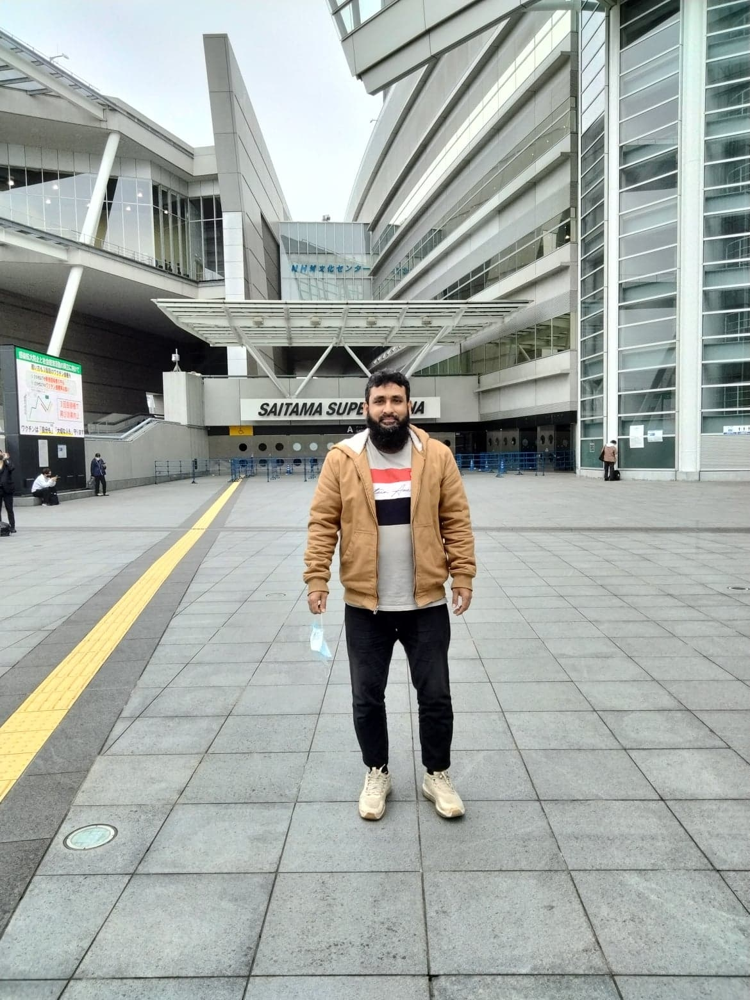

Ill-condition Enhancement for BC Speech Using RMC Method
International Journal of Speech Technology (IJST), Springer Nature, 2024. CiteScore: 5.0.
Associate Professor of Computer Science & Engineering
Ph.D. in Signal Processing from Saitama University, Japan (2024). Specializing in bone-conducted speech enhancement, modified linear prediction (MLP/RMC), VoIP packet loss concealment, and applied machine learning for intelligent assistive communication.
A researcher dedicated to advancing digital signal processing, speech technologies, and artificial intelligence for societal and clinical benefit.
Dr. Ohidujjaman Tuhin is an Associate Professor in the Department of Computer Science and Engineering (CSE) at United International University (UIU), Dhaka, Bangladesh.
He earned his Ph.D. in Science and Engineering from the prestigious Graduate School of Science and Engineering at Saitama University, Saitama, Japan (2024), with a perfect coursework CGPA of 4.0 / 4.0. Under the guidance of renowned signal processing authority Prof. Tetsuya Shimamura, his doctoral research pioneered innovative spectral estimation and enhancement techniques for bone-conducted (BC) speech signals.
Dr. Ohidujjaman Tuhin holds an M.Sc. in Computer Science & Engineering from United International University (graduating Summa Cum Laude with CGPA 4.0/4.0 in 2014) and a B.Sc. (Honors) in CSE from Islamic University, Kushtia (First Class, 2008), where he was honored with the competitive governmental ICT Scholarship.
Throughout his career, Dr. Ohidujjaman Tuhin has served at leading institutions including Daffodil International University (where he earned the Teaching Practice Excellence Award in 2020), Hamdard University Bangladesh, Dhaka International University, and as an Assistant Programmer at the Bangladesh Computer Council (BCC).

Dr. Ohidujjaman Tuhin at Saitama Super Arena during his Ph.D. research at the Graduate School of Science & Engineering, Saitama University (2022–2024).
Recent milestones, conference recognitions, and major publication updates.
Awarded the prestigious Best Paper Award at the 6th International Conference on Image, Video and Signal Processing (IVSP 2024) held at Meiji University Ikuta Campus, Kawasaki, Japan, for groundbreaking work on Packet Loss Concealment Using Regularized Modified Linear Prediction.
Authored two consecutive high-impact papers in the International Journal of Speech Technology (Springer Nature, Scopus Q1, CiteScore: 5.0) addressing ill-condition enhancement (RMC method) and spectral analysis of bone-conducted speech.
Successfully defended Ph.D. dissertation in Speech Signal Processing at Saitama University, Japan, graduating with a stellar 4.0/4.0 coursework CGPA and continued collaborative research initiatives with international laboratories.
Investigating mathematical, statistical, and neural architectures for next-generation speech and intelligent systems.
Bone-conducted (BC) speech captures acoustic vibrations directly through skull bones, immune to ambient acoustic background noise. However, BC signals suffer severe high-frequency attenuation and ill-conditioning in classical linear prediction. Dr. Ohidujjaman Tuhin investigates Modified Linear Prediction (MLP) and Regularized Modified Covariance (RMC) methods to stabilize spectral models and reconstruct high-fidelity acoustic speech.
Transmission over wireless networks and VoIP links frequently encounters packet drops that disrupt intelligibility. This research develops novel PLC architectures estimating residual errors of forward-backward linear prediction and leveraging bone-conducted sensory channels to seamlessly conceal lost speech segments in adverse network conditions.
Developing computational linguistic tools for low-resource and morphologically rich languages like Bengali. Research spans ambiguity-resolving Machine Translation, Word2Vec neural embeddings, text summarization, sentiment classification, and Universal Networking Language (UNL) frameworks for semantic interoperability.
Applying state-of-the-art predictive algorithms, ensemble learning, and deep computer vision to healthcare diagnostics. Key published studies include automated detection of Diabetic Retinopathy, Chronic Kidney Disease, Parkinson's progression monitoring, and assistive technologies for patient convalescence.
Peer-reviewed journal articles, conference proceedings, and international transactions.
International Journal of Speech Technology (IJST), Springer Nature, 2024. CiteScore: 5.0.
International Journal of Speech Technology (IJST), Springer Nature, 2024. CiteScore: 5.0.
Proceedings of the 2024 6th International Conference on Image, Video and Signal Processing (IVSP 2024), Meiji University Ikuta Campus, Kawasaki, Japan. ACM, New York, NY, USA.
IEEJ Transactions on Electrical and Electronic Engineering, Wiley & IEEJ, Vol. 18, No. 11, pp. 1774–1782.
Journal of Signal Processing, Research Institute of Signal Processing, Japan, Vol. 28, No. 3, pp. 77–83.
International Journal of Advanced Computer Science and Applications (IJACSA), Vol. 15, No. 4.
International Journal of Advanced Computer Science and Applications (IJACSA), Vol. 15, No. 5.
2021 2nd International Conference on Robotics, Electrical and Signal Processing Techniques (ICREST'21), AIUB, Bangladesh.
2021 6th International Conference on Inventive Computation Technologies (ICICT 2021), Coimbatore, India.
12th International Conference on Computing Communication and Networking Technologies (ICCCNT), IIT, India.
2021 6th International Conference on Inventive Computation Technologies (ICICT 2021), India.
2021 6th International Conference on Inventive Computation Technologies (ICICT 2021), India.
8th International Conference on System Modeling & Advancement in Research Trends (SMART), India.
10th International Conference on Computing, Communication and Networking Technologies (ICCCNT), IIT Kanpur.
Lecture Notes in Networks and Systems (LNNS, Vol. 103), Springer, Singapore.
2014 IEEE International Symposium on Signal Processing and Information Technology (ISSPIT 2014), Noida, India.
International Journal of Computer Applications (IJCA), Vol. 106, No. 9, pp. 15–21.
Science Frontiers, Vol. 2, No. 4, pp. 61–66.
American Journal of Engineering Research (AJER), Vol. 10, No. 03, pp. 121–126.
American Journal of Engineering Research (AJER), USA, Vol. 6, No. 8, pp. 286–294.
A trajectory marked by sustained research rigor, international scholarship, and university instruction.
Graduate School of Science and Engineering • Department of Information & Computer Sciences.
Specialization: Speech Signal Processing, Bone-Conducted Speech Enhancement, Linear Prediction.
Supervisor: Prof. Tetsuya Shimamura.
Thesis on Speech Signal Enhancement and Single-Channel Adaptive Filtering.
Graduated with Highest Scholastic Honors.
Department of Computer Science and Engineering.
Awarded the prestigious Government ICT Scholarship (2005).
Leading cutting-edge research in speech processing and machine learning. Teaching undergraduate and graduate courses including Machine Learning and Data Mining; supervising student research teams.
Department of Information & Computer Sciences. Investigated novel mathematical formulations for bone-conducted speech enhancement and VoIP packet loss recovery.
Taught advanced algorithms, AI, and systems courses. Recognized with the prestigious Teaching Practices Excellence Award (2020).
Instructed foundational computer science curriculum, programming languages, and discrete mathematics.
Contributed to governmental IT development initiatives, technical infrastructure, and computer training frameworks.
Merit scholarships, conference awards, and academic excellence recognitions.
Awarded for the paper titled "Packet Loss Concealment Using Regularized Modified Linear Prediction through Bone-Conducted Speech" at the 6th International Conference on Image, Video and Signal Processing.
Awarded competitive merit scholarship during Ph.D. studies at Saitama University in recognition of exemplary academic and research standing.
Conferred for exceptional pedagogical impact, curriculum coordination, and student mentorship in computer science education.
Earned for graduating at the top of the graduate cohort with a flawless CGPA of 4.0 out of 4.0 in M.Sc. in Computer Science & Engineering.
National talent scholarship conferred to promising undergraduate students in Information & Communication Technology.
Achieved straight A+ / 4.0 GPA across all doctoral coursework subjects in Information and Computer Sciences at Saitama University.
Inspiring students through hands-on laboratory exercises, mathematical foundations, and research projects.
Supervised and unsupervised learning, regularized regression, support vector machines, neural networks, decision trees, and ensemble techniques applied to real-world datasets.
Data preprocessing, clustering, association rule mining, anomaly detection, NoSQL databases, and scalable distributed algorithms for large-scale data systems.
Discrete-time signals, Z-transform, linear prediction theory, spectral analysis, filter design, short-time Fourier transform, and speech enhancement algorithms.
Divide-and-conquer, greedy heuristics, dynamic programming, graph algorithms, NP-completeness, and asymptotic analysis under Outcome-Based Education (OBE).
Heuristic state-space search, adversarial gaming, constraint satisfaction, probabilistic reasoning, knowledge representation, and introductory natural language processing.
Sequence alignment algorithms, phylogenetic tree reconstruction, genomic databases, and computational biology methods utilizing machine learning paradigms.
Open for research collaborations, conference invitations, speaking sessions, and prospective student inquiries.
Feel free to visit during designated office hours or reach out via email for research or academic consultations.
Fill out the inquiry form below to get in direct communication.